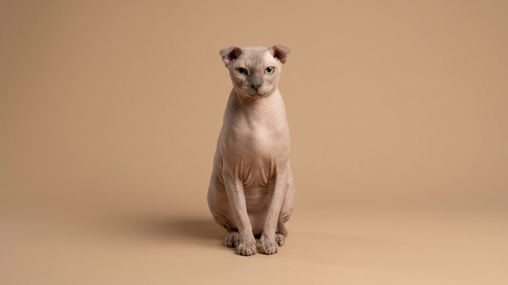

Украинский левкой выглядит экзотично, но его потребности конкретны и предсказуемы: кожа без шерсти накапливает жир и пыль, загнутые уши требуют регулярного внимания, а мёрзнет кошка быстрее, чем вы думаете. Порода редкая — выведена в Украине в 2004 году скрещиванием донского сфинкса с шотландским вислоухим, и никакой другой породы с таким сочетанием нет. Если понять логику этого ухода заранее, никаких сюрпризов не будет.
🐾 У вас украинский левкой?
AnimaLife соберёт уход под породу: к каким болезням есть склонность, что проверять по возрасту, чем кормить и когда пора к врачу. Бесплатно, прямо в мессенджере.
Собрать план ухода → Собрать в MAX →
У вас iPhone? AnimaLife есть в App Store
Украинский левкой — кошка, которая не умеет быть фоновой. Порода активно ищет контакт: ложится рядом, лезет под плед, следит за хозяином по квартире. Привязанность устойчивая — кошка выбирает одного-двух людей как «своих» и держится с ними постоянно.
Без шерсти кожный жир не распределяется по волосяному покрову — он остаётся на поверхности и накапливается в складках и на лапах. Украинского левкоя купают раз в 1–2 недели тёплой водой с мягким шампунем для бесшёрстных кошек. В промежутках — протирание влажной тканью без спирта, особенно в складках.
Украинский левкой тратит больше калорий на поддержание температуры тела, чем шёрстные кошки. Отсюда два практических следствия.
Во-первых, кормить нужно чуть больше нормы по весу — конкретный объём уточняйте у ветеринара, ориентируясь на вес и активность кошки. Во-вторых, в квартире не должно быть холоднее 22–23 °C. Сквозняки и холодный пол — риск для этой породы. Нужны тёплые лежанки, желательно с бортиком или подогревом.
🐾 Ваш питомец — украинский левкой?
Заведите профиль в AnimaLife: приложение запомнит породу, возраст и вес и будет подсказывать по уходу именно для неё. Вопросы AI-ветеринару — круглосуточно и бесплатно.
Завести профиль → Завести в MAX →
У вас iPhone? AnimaLife есть в App Store
🐾 Понравился разбор?
Подпишитесь на канал — каждый день разбираем по одному тревожному симптому у кошек и собак: что в пределах нормы, а когда пора к врачу. Подпишитесь, чтобы не пропустить разбор, который может спасти здоровье вашего питомца.
Загнутые уши украинского левкоя — визитная карточка породы, но и зона повышенного внимания. Загиб меняет вентиляцию ушного канала, поэтому серы и загрязнений скапливается больше, чем у кошек с прямыми ушами.
Чистить уши нужно раз в 1–2 недели: ватный диск или специальная салфетка, без глубокого введения. Внутри должно быть чисто и без стойкого запаха. Если ухо выглядит воспалённым, есть тёмный налёт с неприятным запахом или кошка трясёт головой — это повод показаться ветеринару, а не чистить интенсивнее.
Украинский левкой — редкая порода, питомников немного. Это важно: покупать котёнка стоит только у проверенного заводчика с документами РКФ/WCF, поскольку бесконтрольное разведение у этой породы связано с рисками для здоровья суставов (унаследованными от вислоухих родителей).
Материал носит информационный характер и не заменяет очную консультацию ветеринара.